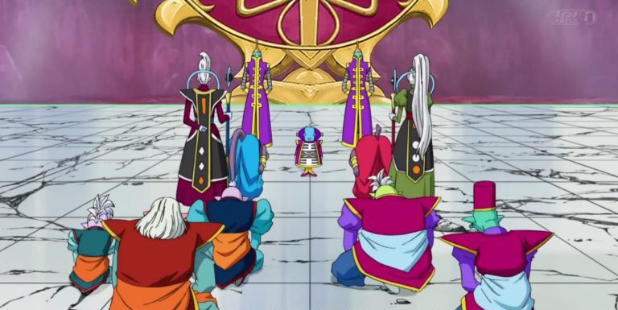
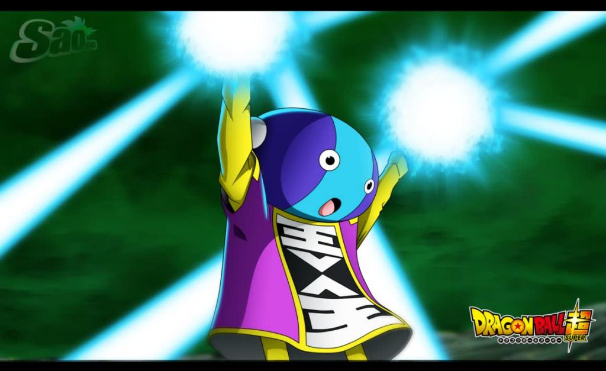
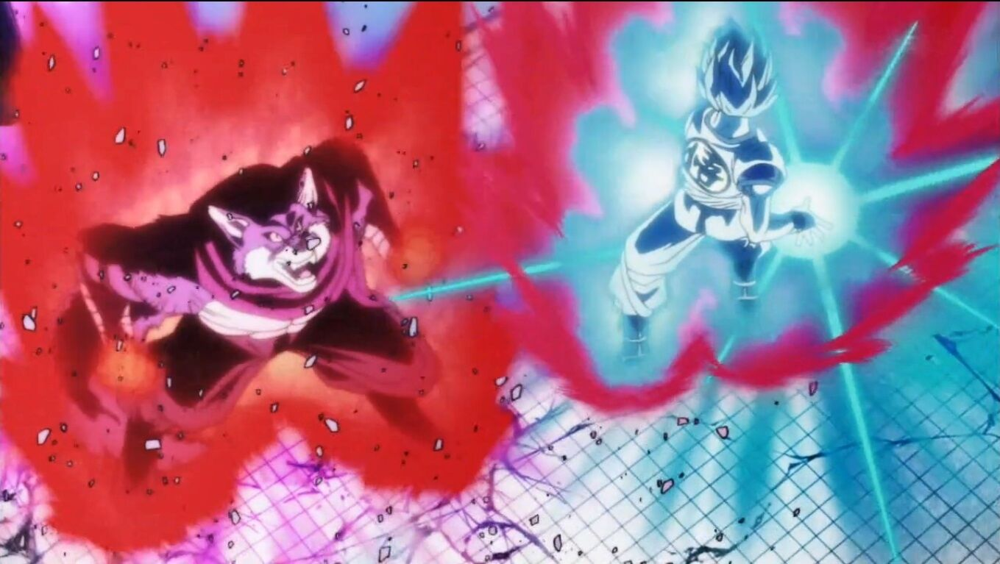

Apperence of lord Beerus
In a peaceful period following the defeat of Kid Buu, Goku continues to attempt to maintain Earth's peace despite being forced by Chi-Chi to get a job as a radish farmer. Gohan and Videl are married while Krillin has become a police officer.[16] The God of Destruction Beerus prophesizes of a Super Saiyan God and upon waking begins a search for the figure. The search leads him to King Kai's planet where he outclasses a Super Saiyan 3 Goku, before turning his eyes to Vegeta on Earth. Beerus enjoyed his time on Earth until he was angered by the ungenerous Majin Buu for not sharing his pudding. The Z Fighters team up to take out Beerus but his power was too much for them.
Goku and Vegeta train with Whis
Before Beerus could destroy the Earth, Goku intervenes and requests for more time to seek out the Super Saiyan God. Goku uses the Dragon Balls to summon Shenron and learns that a ritual is performed to make the Super Saiyan God. After achieving this state, Goku begins another battle with Beerus. In the end result of Beerus winning, Beerus leaves to go back to his planet and sleep. Sorbet and the rest of the Third Stellar Region are failing to find Dragons Balls and their empire starts to crumble by the day so they set out to revive Frieza. After Frieza has been revived, he seeks revenge on Goku and trains for four months. During this time, Goku and Vegeta are being trained by Whis to grow stronger in their base, and Videl gives birth to her and Gohan's daughter, Pan.
Arival of Frieza
Frieza has returned to Earth and brings an army of one thousand soldiers. His army has been defeated by some Z-Fighters. Goku and Vegeta eventually realize Frieza is alive and reach Earth. Goku and Vegeta combat Frieza in his Golden form using Super Saiyan Blue. Frieza destroys the Earth as a last ditch effort to escape the wrath of Vegeta, however, Whis, Beerus, Goku and some few others survive. Whis alters time and sends Goku three minutes into the past to finish off Frieza before he can destroy the Earth. Gohan starts training with Piccolo to get back in fighting shape and protect his loved ones. Additionally, Goku and Vegeta resume their training.
Match between beerus and champa
Goku and Vegeta's training is interrupted once again with the arrival of Champa and Vados. It is revealed that there are twelve universes in all, and Goku and Vegeta are from Universe Seven, and Champa is the God of Destruction of Universe 6. Upon being stunned by the delicacies of Earth, Champa and Beerus arranges a Tournament of Destroyers. If Champa wins, he will swap the Earth of Universe 7 with the extinct Earth of his universe. If Beerus wins, he will obtain the six Super Dragon Balls Champa has been secretly collecting throughout the two universes. Team Universe 7, consisting of Goku, Vegeta, Piccolo, Majin Buu and the mysterious Monaka face off against Team Universe 6, Frost, Hit, Botamo, Cabba and Auta Magetta. Team Universe 7 wins after Goku surrenders in his final match with Hit, stating that he wants to fight him in full power, prompting Hit to intentionally eliminate himself against the shockingly useless Monaka in the final match. As Champa is about to incur his wrath against his own tournament candidates, Zeno, the King of All Gods, appears and says that he has been observing the event, and hopes to set up a similar tournament, with contestants from all twelve universes. Zeno leaves, and Beerus utilizes the Super Dragon Balls to resurrect Universe 6's planet Earth along with its inhabitants.

Apperence of futer trunks and Goku black
After that event, Goku, Vegeta, Goten, Trunks and Monaka are stranded on an outer space adventure, where Goku faces off against Duplicate Vegeta. Some time later, Future Trunks uses his time machine to escape from his dystopian timeline, where Future Bulma and millions have perished from the mysterious threat known as Goku Black, a mysterious but sinister doppelganger of Goku. Arriving in the present, Trunks reunites with the Z Fighters and meets Beerus and Whis. Goku Black invades their timeline to seek Future Trunks, and ends up fighting with Goku. However, a distortion pulls him back to Future Trunks' timeline. Realizing that Black was using a mystical artifact known as the Time Ring, which only belongs to the Supreme Kais, along with Goku, Beerus & Whis travel to Universe 10, to apprehend Gowasu, who has the Time Ring, and his apprentice Zamasu, who possesses identical ki to Black. Zamasu despises all mortals due to their aggressive nature and their inevitable drive to start conflict and wars, which he believes is something that can never be prevented as long as they aren't destroyed. After he is easily defeated by Goku, Zamasu becomes fanatically obsessed with the Universe 7's imprudent warrior, who he realizes, has divine ki, which makes him believe that the power of the mortals are going unchecked.

Goku and Zeno became friends
Zeno summons Goku to his palace, where they meet Grand Minister. Zeno declares that he wants to be Goku's friend and gives him a button that will summon him if needed. Using another time machine, Goku, Vegeta and Future Trunks head into the future and are shocked to see Black with another counterpart of Zamasu. They get defeated and head back to the past. Zamasu's beliefs of mortal extinction is strengthened after he sees more barbaric violence initiated by the mortals in the far future and later the Destroyer's Tournament, which makes him infuriated at the irresponsibility of the other gods, who he believes is not taking their job seriously. He confronts Zuno and forces him to tell him everything about the Super Dragon Balls and Goku. Shin informs of this event to the Z Fighters. Beerus, Goku, Whis & Supreme Kai head to Universe 10 where they witness Zamasu assassinating Gowasu in order to steal the Time Ring. Whis uses his Temporal Do-Over to undo the effect, and Beerus destroys Zamasu. Goku, Vegeta & Future Trunks head back to the future where they see that Goku Black and Zamasu are still present. Black reveals that he is indeed Zamasu. Before Future Trunks created a new timeline by going to the past, in the original timeline, Zamasu still met Goku, assassinated Gowasu, stole his Time Ring, and used the Super Dragon Balls to swap bodies with Goku whose power he lusts over and later kills him and his family. Realizing his own timeline is doomed beyond repair, he uses the Ring to travel to the timeline of Future Trunks and seeks a new ally, this timeline's version of Zamasu. They wreak havoc on multiple planets and universes, killing all gods, and reach to Earth as their final act of genocide, after every other part of the cosmos are wiped out, continuing their Zero Mortals Plan. Also, it is revealed that Future Zamasu used the now-destroyed Super Dragon Balls of their timeline to attain immortality.

Trunks anger
Trunks attains a powerful transformation, while a beaten Goku and Vegeta return to the past. Goku learns the Evil Containment Wave so that he can seal Zamasu away while Vegeta trains in the Hyperbolic Time Chamber. They return to the future and later, Gowasu and Supreme Kai joins in to stop the evil acts. After Future Zamasu is driven to a corner, Goku Black decides to utilize their contingency plan, and they fuse to become Fused Zamasu. Goku and Vegeta use Supreme Kai's Potara earrings to fuse and become Vegito, and a ferocious battle ensues. However, because of the time limit and physical constraints caused by the Potara Fusion, Goku and Vegeta defuse.
Grand Zeno destroy whole universe
Future Trunks steps in as Zamasu is being overwhelmed by the imbalance of his spiritual and physical state and uses the energy of Goku, Vegeta and all the living beings in the planet, to slice Zamasu up, he is forced to cast off his physical body. He transcends his physical vessel and his essence & will becomes one with the very cosmos itself. Goku uses Zeno's button which summons Future Zeno, who erases the timeline out of annoyance. The surviving fighters escape to the past. Future Trunks and Goku return to the timeline back again, and they take Future Zeno to the main timeline's Zeno, and they become playmates. A traumatized and devastated Future Trunks and Future Mai decide to live in the new alternate timeline that Whis created after he went to warn Future Beerus about Zamasu and they bid a heartful final farewell to the Z Fighters after they are unable to save their own world.

Goku Request for Tournament
After that event, minor events revolve around some of the characters. Some time later, at Goku's request, the two Zeno's decide to organize a tournament including all twelve universes, called the Tournament of Power, which will take place in the Null Realm. In the Zeno Expo, Great Priest reveals that this tournament is not only made for recreational purposes, in fact, the Zeno's were planning to get rid of the weaker universes all along and this tournament will also serve as a judging basis for them to do so, with the four universes that were at the top of Zeno's mortal level scale, being spared automatically.
Preparation For Tournament
However, before the actual Tournament begins, Future Zeno wishes to see an exhibition match to experience the thrill beforehand. The Grand Priest accedes and a warm up tournament is setup between Universe 7 and Universe 9. Majin Buu, Gohan and Goku respectively defeat the wolfish fighters Basil, Lavender, and Bergamo with Goku revealing his Super Saiyan Blue form, thus surprising all the Gods of Destruction. After Goku wins, a mysterious fighter by the name of Top wishes to fight Goku, considering himself a servant of justice and the latter as evil. An intense battle begins with Toppo dislocating Goku's shoulder and Super Saiyan Blue Goku delivering a Kamehameha at point blank range. Toppo survives but the Great Priest stops the battles before one of them dies before the tournament. Before leaving, Toppo reveals that he is not the strongest fighter in Universe 11 but it is his friend Jiren, who will destroy Goku for sure. The Great Priest announces that the tournament will begin in 40 Earth hours and all the Universes depart. Goku returns to Earth and, along with Gohan, sets out to recruit 8 other members. Vegeta agrees to participate after Bulma gives birth to their daughter, Bulla. Goku recruits Piccolo, Master Roshi, Androids 17 and 18, Tien, and Krillin. Majin Buu is selected but falls asleep and Goku chooses Frieza as a replacement, much to everyone's horror. Everyone arrives at the World of Void for the tournament and a chaotic battle royal ensues between all the eight universes.

Ultimate battle between Universes
Powerful new warriors prove their worth in the battlefield and Universe 7 defeats Universes 9, which is promptly erased. The tournament proceeds, and Universe 6's Saiyan warriors Kale and Caulifla continue to break their limits throughout the battle royal. Shortly, Universe 10 is erased after their last fighter Obni is defeated by Gohan. As half of the time goes by in the tournament, Goku faces off against the mightiest mortal, Jiren, whose power is rumored to be in the domain of the Gods of Destruction. During his intense battle with Jiren, Goku falls after his plan to release the Spirit Bomb, but he ends up obtaining a godly state known as Ultra Instinct, which allows him to dodge any attack without having to think, in exchange of putting unconditional faith on his own body. Goku ultimately loses and proceeds to battle the other universes. Universe 6's strongest fighter Hit is unpredictably eliminated by Jiren. Goku defeats Kefla, the fusion of Kale and Caulifla, by reactivating his Ultra Instinct and erupting a mighty Kamehameha at her, throwing her out of the ring. Promptly, Universe 2 and their love warriors and Universe 6 and their last Namekian fighters are erased by the combined efforts of Universe 7, who also clear up Universe 4 and it's fighting team, comprised of cunning superpowered extraterrestrials of diverse races, briefly.
While intense battel with Jiren goku reached new heights of power which was even gods are having difficulty to reach
After launching sprit bom which was pushed back by Jiren he had no were to go then at that instint he break through and achived this height I love it how it look

After the fight with Jiren he goku was run down at that time universe 6 combinely known kefla challenge goku during that fight he was rundown but he again achive ultra instint and shows the power of ultra instint
Jiren story behind his strength
Universe 3's mightiest warriors fuse together to create the towering and gigantic winged monster, Agnilasa, who is defeated by the combined powers of the seventh universe, causing Universe 3 to get erased. The final warriors remaining in the stage are Goku, Vegeta, Gohan, Frieza and 17, who have to face off against Universe 11's Jiren, Toppo & Dyspo. Gohan eliminates himself in the process to take down Dyspo with him with the help of Frieza. Toppo, infuriated at his inability to stand a chance against Universe 7, leaves behind all his ideals and motivations to turn into a God of Destruction. Frieza is pummeled by Toppo, who is eliminated in a frenzied attack by Vegeta. Jiren finally decides to release his true power, and starts to drop his calm and composed attitude. It is revealed that Jiren's family and allies were all ravaged by an evildoer in the past, and that Jiren has lost all his faith in humanity and friendship or trust after his own allies betrayed him when they abandoned him out of fear of getting the same fate as their fallen friends. Jiren's mind broke, and so did his will. Traumatized, Jiren convinced himself that strength was absolute, that strength forgives all, even the past, as the strength of the evildoer was enough to destroy the hopes of Jiren and his allies. Jiren trained endlessly all these years, reveling in his own unstoppable growing strength to suppress his frustrations and enforcing his own brand of justice against evil by enlisting in the Pride Troopers, vowing to never let anything like his past ever happen in the future again.
Mastered Autonomus Ultra Instint
Vegeta goes beyond Super Saiyan Blue during his ferocious battle with Jiren, the last remaining Universe 11 warrior. Android 17 seemingly blows himself up in a last ditch effort to save Goku and Vegeta from Jiren. Vegeta is knocked out by Jiren, who gives all of his energy away to Goku, putting his trust in his fellow Saiyan. Goku taps into Ultra Instinct again, and goes toe to toe with Jiren, and finally, he masters the godly form. Goku proceeds to defeat Jiren, who starts going through a mental breakdown, devastated that all of his years of training and his ideals were all shattered by Goku, who proved that friendship and unity could be used as a drive to victory. Before he is able to eliminate Jiren who has started to acknowledge the Saiyan warrior's words, Goku's body suffers from using Ultra Instinct repetitively and he collapses. However, it is revealed that both Frieza and Android 17, who has survived his explosion, are still in the ring.

Universe 7 power of trust
They save Goku and proceed to fight a heavily damaged Jiren, who finally exhibits catharsis, upon hearing the inspiring words of his comrade Toppo who says that he believed in Jiren all along and always will. Although, initially, Frieza planned to clear up the strong enemies and then later betray Universe 7 to steal the Super Dragon Balls for himself and use it's power to turn the gods against each other and receive unimaginable strength, he realizes that Jiren's power is too much for even him to handle. Frieza reluctantly accepts to team up with Goku to save Universe 7, throwing away his selfish goals of obtaining the Super Dragon Balls to defeat their opponent in the face of erasure. Putting their complete trust in each other despite being enemies, Goku and Frieza unite their strength to eliminate Jiren. However, they are eliminated in the process. Universe 11 is erased and Android 17, the last person standing in the tournament, uses the Super Dragon Balls to restore all the erased universes. The Grand Minister reveals that Zeno foresaw the outcome of the tournament, and that if the victor used the Super Dragon Balls for a selfish wish, he would destroy everything in existence. The tournament would serve as a great message to gods of the different universes to balance the order of their own respective universes.

End of Tournament
Out of gratitude, Beerus commands Whis to resurrect Frieza for his true comradeship in the end. Jiren finally acknowledges that he is done letting the past bind him in the future, revealing that he has let go of his hollow exterior to mask his problems, and that he was going to face them head on. He seems to come closer to accepting the Pride Troopers as his friends. The Dragon Team return to Earth and celebrate. Bulma gifts Android 17 a cruiser for his valiant contributions in the tournament. After his imminent return, Frieza seizes the opportunity to reassemble the extinct Frieza Forces, declaring with a malicious grin, that the emperor of the universe has returned.
We will never stop on getting stronger
Goku and Vegeta go to the place where they first battled. Goku reveals that he has lost the ability to use Ultra Instinct, but he and Vegeta promise each other that they will keep getting stronger, and continue breaking their limits.